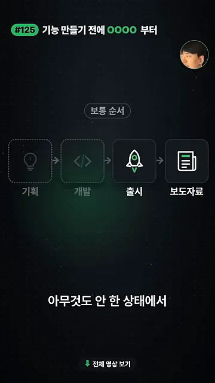
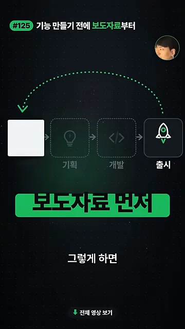
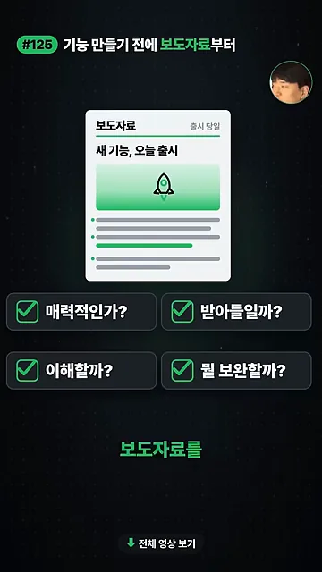
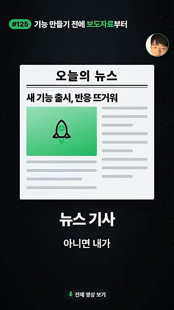
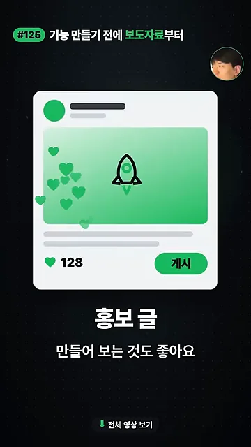
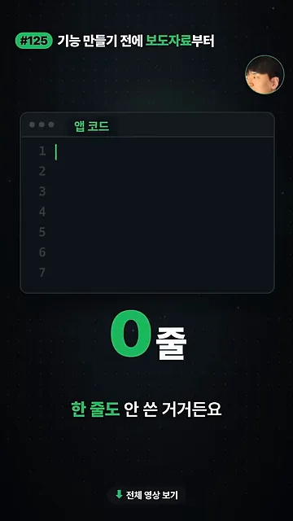
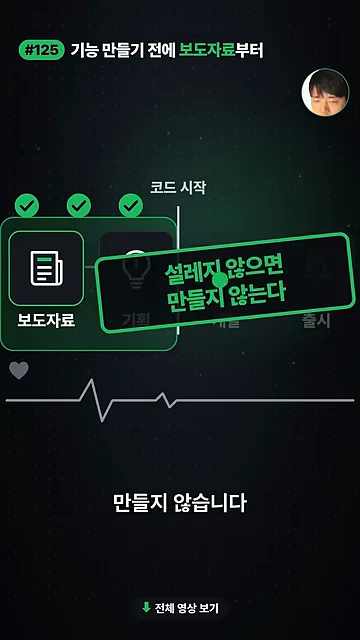
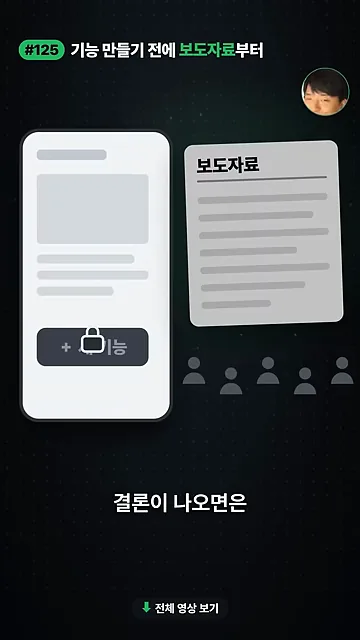

보도자료를 맨 앞으로 옮겨요
제목의 'OOOO'는 보도자료예요. 화면은 먼저 보통 순서를 보여 줘요. 왼쪽부터 기획, 개발, 출시가 이어지고, 맨 오른쪽 칸이 보도자료예요. 제품을 다 만들고 내보낸 다음에야 쓰는 글이죠.

다음 화면에서 맨 끝 칸이 점선 화살표를 타고 맨 앞으로 넘어가요. 그 아래 초록 띠에 '보도자료 먼저'라고 적혀 있어요. 아직 아무것도 만들지 않은 상태에서, 이 제품이 출시됐다고 가정하고 보도자료를 쓰는 거예요. 발표자는 이게 아마존에서 기능을 기획하기 전에 하는 일이라고 소개해요.

이렇게 하면 보도자료에 무슨 내용이 담겨야 할지를 먼저 생각하게 돼요. 사람들이 관심을 갖게 하려면 어떻게 써야 할지도 함께 고민하게 되고요.
보도자료가 걸러 주는 네 가지 질문
보도자료를 쓰다 보면 물어야 할 질문이 자연스럽게 따라 나와요. 화면에서는 '새 기능, 오늘 출시'라는 보도자료 카드 아래에 체크 칸 네 개가 붙고, 하나씩 체크 표시가 채워져요.

| 화면의 질문 | 발표자가 묻는 것 |
|---|---|
| 매력적인가? | 이 제품이 사람들 관심을 끌 만큼 충분히 매력적인가 |
| 받아들일까? | 사람들이 이 제품을 받아들일 수 있을까 |
| 이해할까? | 보도자료만 읽고 무엇인지 이해할 수 있을까 |
| 뭘 보완할까? | 그렇지 않다면 어떤 점을 고쳐야 할까 |
발표자는 이걸 미리 짚기 좋다는 점을 이 방법의 장점으로 꼽아요. 기획서는 기능 목록으로 채울 수 있지만, 보도자료는 읽는 사람이 왜 반가워해야 하는지를 써야 하거든요.
형식은 자유, 코드는 0줄일 때
보도자료라고 해서 꼭 신문 기사 모양일 필요는 없어요. 화면은 두 가지 예를 보여 줘요. 하나는 '오늘의 뉴스' 지면에 '새 기능 출시, 반응 뜨거워'라는 제목이 붙은 뉴스 기사예요.

다른 하나는 SNS(Social Networking Service) 게시물 모양의 홍보 글이에요. 하트 숫자와 '게시' 버튼이 붙어 있어요. 내가 출시 기념 릴스나 홍보 글을 올린다고 치고 직접 만들어 봐도 된다는 뜻이에요.

코드를 쓰기 전에 검토해요
발표자는 이 영상을 찍는 시점에 앱 코드를 아직 한 줄도 쓰지 않았다고 말해요. 화면에는 '앱 코드' 편집기가 1번 줄부터 비어 있고, 그 아래 큰 글씨로 '0줄'이 떠요. 코드를 쓰기 전에 검토할 수 있는 건 최대한 하고 들어가는 게 좋다는 거예요.

그리고 기준을 하나 내걸어요. 화면에서는 보도자료 칸이 맨 앞에 있고, 세 칸이 체크된 뒤 '코드 시작' 선이 그어져요. 그 위에 '설레지 않으면 만들지 않는다'는 도장이 찍혀요.
보도자료가 설레지 않으면 만들지 않습니다.
— 영상 00:32

마지막 화면에서는 '+ 새 기능' 버튼에 자물쇠가 걸리고, 옆의 보도자료와 사람 아이콘들은 회색으로 꺼져 있어요. 새 기능을 만들 때도 보도자료를 먼저 써 보고, 사용자가 별로 궁금해하지 않을 것 같다는 결론이 나오면 더 고민해 보라는 장면이에요.
